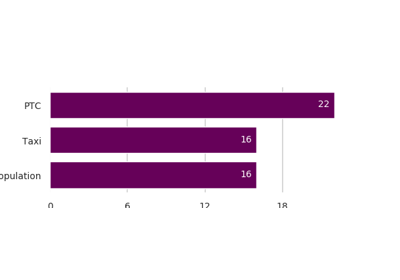

Gallery of Charts¶
Below is a gallery of example charts for different types of charts and maps. Some examples derive from the RICK module (source code rick.py) to be used straight out of the box (with some customization possible).
Other examples are stand-alone with the source code contained directly in the example page.
Bar Charts¶
Below is a gallery of bar charts.
RICK Bar Chart: derives from the RICK package with source code in rick.py.
activeTO Bar Chart: developed for activeTO with source code inside the example.
